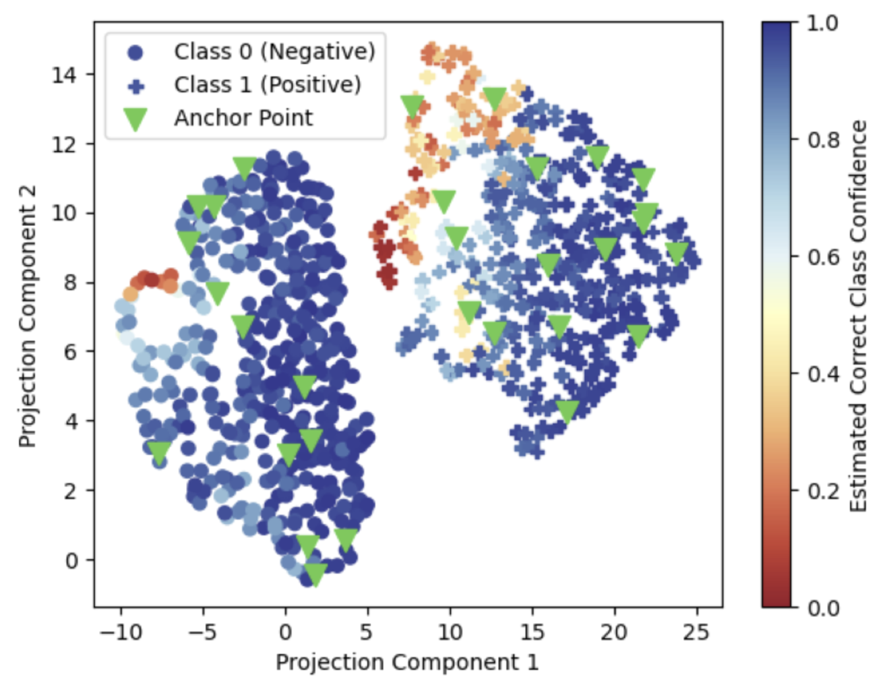
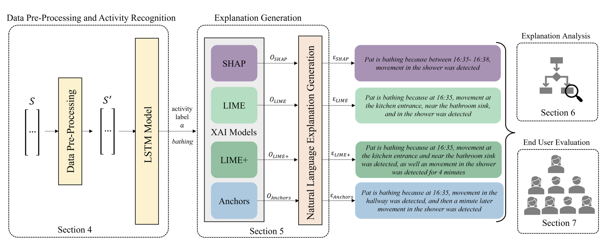
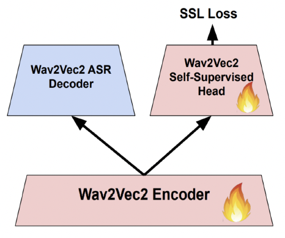
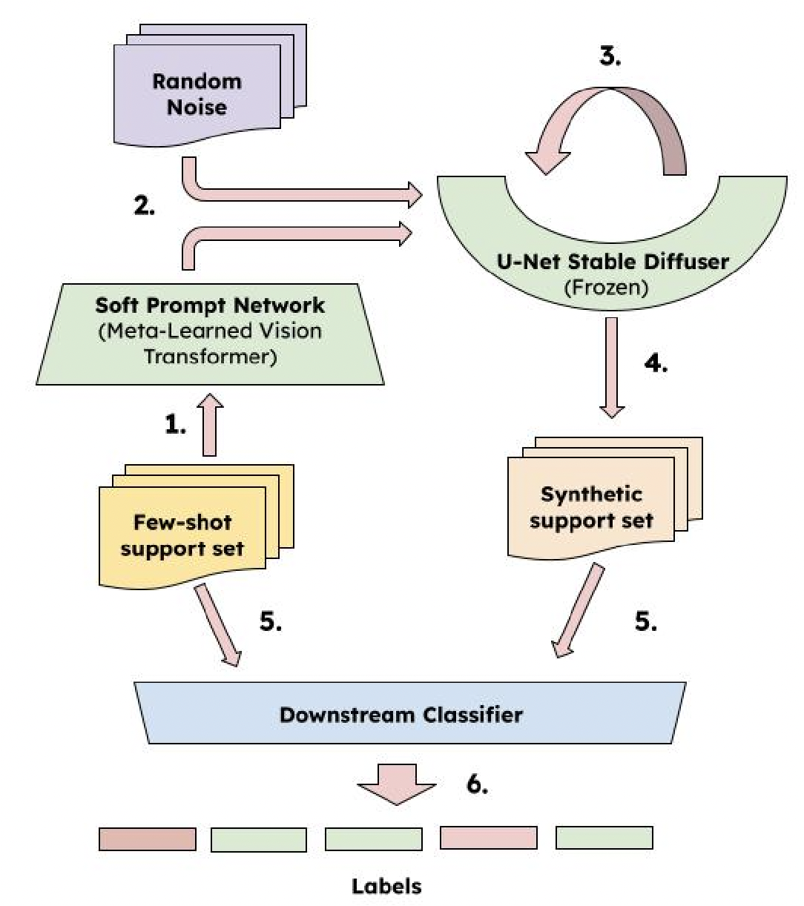
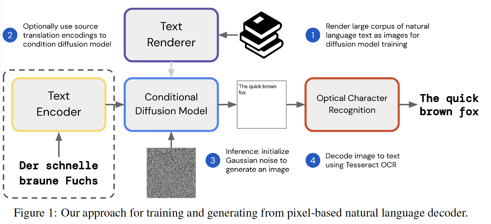
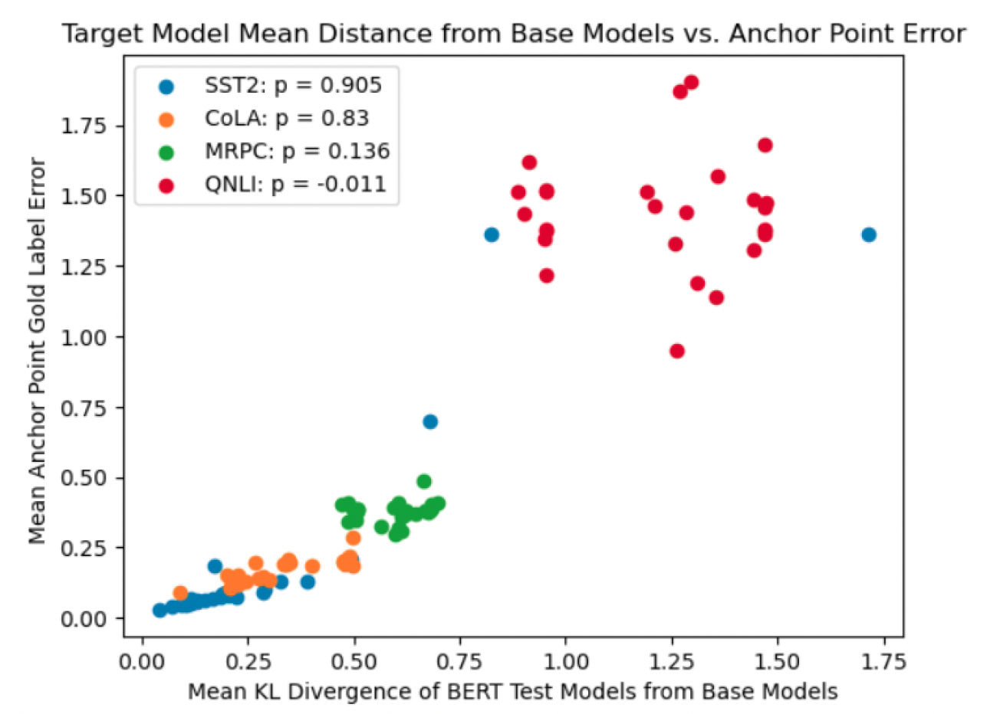
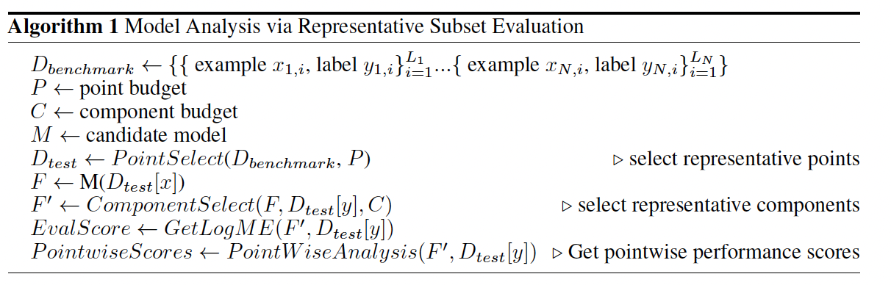
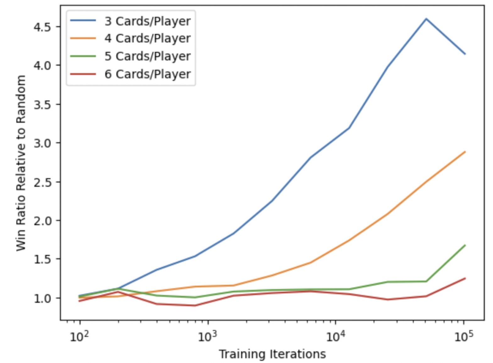
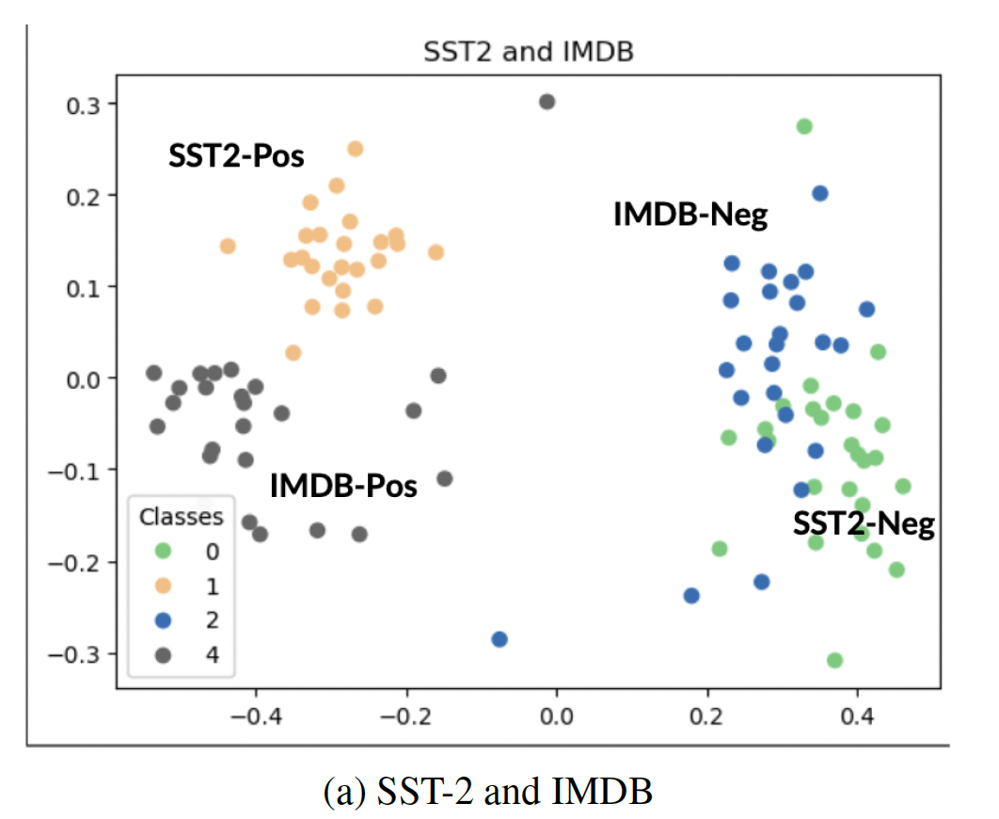

I'm an AI researcher and engineer at Contextual AI, where we are building enterprise-grade AI with retrieval-augmented foundation models.
Previously, I was an AI researcher and MSCS student at Stanford, advised by Douwe Kiela, Diyi Yang, and Kawin Ethayarajh. I also worked on video foundation models at Scale AI, document understanding models at JP Morgan, and ML for large graphs and scene segmentation at Lockheed Martin. Before that, I studied electrical engineering at Georgia Tech and researched explainable AI with Sonia Chernova.
Some of my interests are deep learning, systems, racquet sports, physics, and psychology.
Publications
-

Anchor Points: Benchmarking Models with Much Fewer Examples
We discover that language model predictions are low-rank: correct class probabilities are strongly correlated on many pairs of examples. We exploit this to benchmark language models (on GLUE and MMLU) with much fewer examples and infer performance on specific, unseen points.
-

Explainable Activity Recognition for Smart Home Systems
We present a framework to generalize leading explainable AI techniques (Local Interpretable Model-agnostic Explanations, SHapley Additive exPlanations (SHAP), Anchors) to time series data and generate natural language explanations of human activities. We conduct user studies and more broadly discuss AI + smart home-assisted care of the sick and aging.
Projects
-

Test-Time Training for Speaker Adaptation in Automatic Speech Recognition Systems
We adapt test-time training with self-supervision (Sun et al. 2019) to the Wav2Vec2 audio foundation model, achieving reliable adaption to different speakers at test time.
-

Synthetic Data Generation for Few Shot Learning
We propose a meta learning-based synthetic data generation strategy where image foundation models are optimized to generate or augment training data such that the performance of a downstream classifier improves.
-

Natural Language Generation with Pixels
We investigate non-autoregressive language generation by training a diffusion-based decoder that can generate plausible, coherent text rendered as images. We pair our decoder with a powerful off-the-shelf language encoder for machine translation, and compare against autoregressive transformer baselines.
-

Can BERT Tell Me What GPT-3.5 Will Say? An Analysis of Predictive Correlations across Language Models
We investigate and characterize the phenomenon of strong correlations between the predictions of language models at the data point level. We show that correlations in the predictions of a dozen models from one family (e.g. BERT) can be used to estimate the behavior of models from another family (e.g. GPT 3.5). This work is closely related to our Anchor Points work.
-

Benchmark Distillation: Selecting Representative Evaluation Subsets via Component Relevance
We investigate a wide range of embedding and data selection strategies for extracting microsets, small subsets of evaluation benchmarks that reliably rank model performance. We discover that for techniques leveraging the Logarithm of Maximum Evidence, the size of the microset is lower bounded by the dimensionality of the embedding space. We partially overcome this through selecting only relevant embedding components.
-

Designing a Reliable Crew Member
We demonstrate the effectiveness of a modified Monte Carlo Tree Search with the UCB-1 selection algorithm to play the cooperative trick-taking card game The Crew.
-

Benchmark Hill Climbing During Large Model Pretraining: Some Preliminary Investigations
We propose a broad framework for rapidly predicting benchmark performance via zero-shot performance on a small number of downstream examples. We investigate a few stepping stones towards achieving this vision including assessing the correlation between zero-shot and fine-tuned performance, as well as measuring data relatedness at both the task and data point level through analysis of training dynamics.